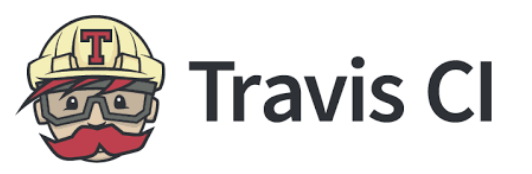
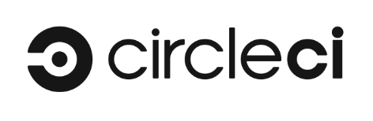
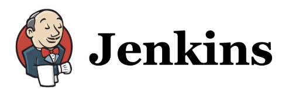

Last updated: December 06, 2025
Suggested AI Uses for Research Tasks
Ideation

- Planning code or projects
- Coming up with project names or acronyms
- Identifying novel relationships
Text

- Summarizing documents
- Combining documents
- Transforming document format (to a table for example)
- Text search & navigation
- Communication adjustment
- Content summarization
Visual Design

- Creating flyers for outreach
- Creating logos
- Creating presentation graphics
Code

- Refactoring code
- Annotating code
- Writing documentation
- Checking for security or privacy concerns
- Understanding someone else’s code
- Understanding errors
- Ideas for code validation/testing
- Translating code to a new language
Project Management

- Developing templates
- Breaking down tasks
- Assigning roles
- Creating meeting agendas and summaries
- Creating lab document drafts
- Code of conduct
- Mentee Agreement
- Lab Handbook
Tips for AI use
- Don’t use prmopts that would violate data privacy restrictions or
licensing (most comercial tools are not private!)
- Be specific and iterate on prompts
- Where possible work in an environment that allows for projects to
retain the context
- Typically asking AI to improve existing work is better than starting
from scratch
- Check everything! Ask the AI to question itself and have a human
(maybe you) review text and code
The more substance and original thought you provide the more
substance and original thought your final product will have!
Challenges and Mitigation
| Giving credit for other people’s work used to train models is
difficult |
Be transparent about how you use AI tools, include tool versions.
Ask the tool for sources to credit. Choose tools that are more
transparent about what data was used for training |
Good example… |
| Data privacy is tricky - Some tools are using data that should not
have been available |
- Choose tools that are more transparent about what data was used
for training.
- Look into those data sources and see if they
followed data privacy regulations.
- Never use private data or info
in a prompt for a commercial tool |
See if your insitute offers private tools |
|Environmental Impact - AI tools use data centers that require lots
of electricity and water| Consider if AI is really needed for a task,
Choose tools that are transparent about energy use and attempts to
improve efficiency including:
- using data centers in cooler climate locations - using heat from
data centers for other uses- using smaller models
|Trust and Unskilling| Using AI too much can degrade trust in yourself
& potentially result in unskilling| Use AI for more specific help,
like polishing as opposed to writing things from scratch|afdasd| |Bias -
even simple requests can generate biased response| Be aware of bias, Ask
your tools to consdier bias and challeng tools when they fail to
recognize bias| afds|

| Free for public
repos| Low|GitHub, GitLab, Bitbucket|
Travis CI
Guide|
|
| Free for public repos | High|GitHub, GitLab, Bitbucket|CircleCI Guide |
|
| Free for public repos| High|Intended for GitLab, GitHub,
Bitbucket|GitLab CI Guide |
| | Free for public
repos| High|Intended for GitHub, GitLab with some effort|ITN
Course on GitHub Actions |
|
|Free for public or private repos (other potential costs)| Very
high|GitHub, GitLab, Bitbucket|Jenkins
Guide
Giving credit for people’s work is hard & Data privacy is
tricky–> Be transparent and specific about AI use, choose models that
are transparent about how they were trained. Shop around!
Environmental impact should be considered –> Choose AI tools
that are transparent about resource usage and attempts to improve
efficiency, consider when AI might not be needed. https://www.ecolytics.io/blog/ecolytics-launches-offset-ai-the-first-tool-to-track-and-offset-the-environmental-impact-of-artificial-intelligence-usage
Using AI too much might degrade your trust in yourself
Bias - even simple AI requests can generate biased
responses
Environmental Impact is very real: Loss of trust in yourself: Use in
moderation, read the literature, talk to trainees. You are still a
spectacular supercomputer! Bias: consider responses with this lens - ask
chatbots to consider bias and challenge them when they fail.
{kind=link}